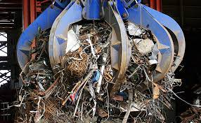
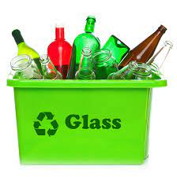
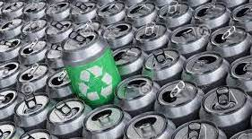
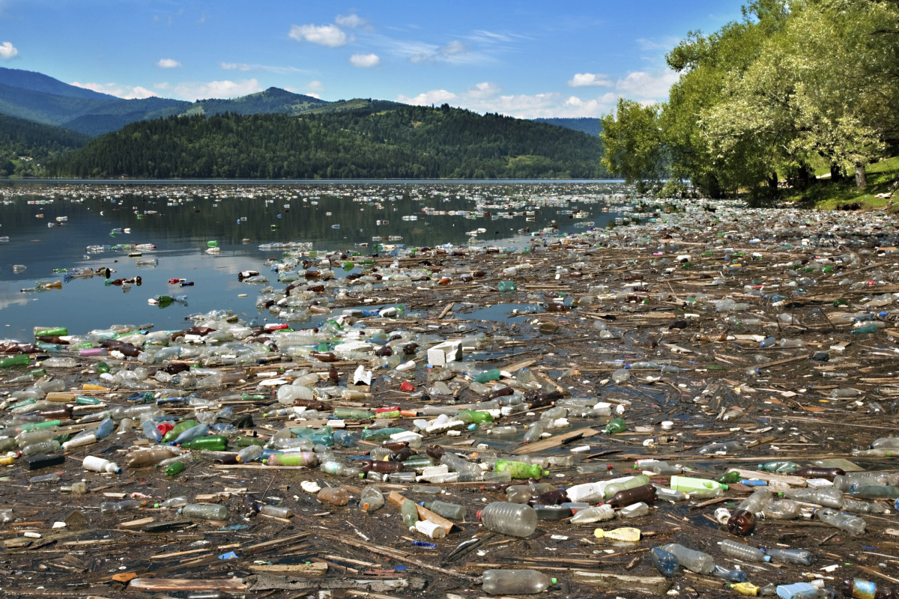

The process of recycling is to collect waste materials, break them down, and then turn them into new products.
Steel is the easiest to recycle. It is crushed and smushed together and then melted. They can then mix it with new steel and make new steel products.

Glass is separated by color and then crushed into pieces called cullets which are then melted and used to make new glass. 
Like Glass and steel, Aluminum is crushed into small pieces, then melted in a furnace, and turned into thin sheets that can be used to form aluminum products.

For paper, they filter out contaminants. this may be ink, glue, pieces of plastic, or dirt. This is done with screens and different baths with different types of chemicals.
Plastic is tricky because there are 6 different types of plastic or 6 different types of chemicals or molecular structures are used to make that plastic. The type is indicated on the bottle. Some of these plastics are easier to recycle than others. For example, polyethylene terephthalate or PET plastic-type is harder to melt. When this plastic is very hot it is easy to shape it without the molecular structure being affected. They also separate the plastics b/c some plastics are more toxic than others.
Often plastic or trash is burned and this pollutes the air, creates dioxins, a toxic substance, and can also contribute to acid rain which leads to the destruction of plants and crops.
Recycling reduces greenhouse gas emissions To make products using recycled materials takes less energy than to make something brand new. Electricity causes a lot or is the source of a lot of greenhouse gases so recycling cases fewer emissions.
